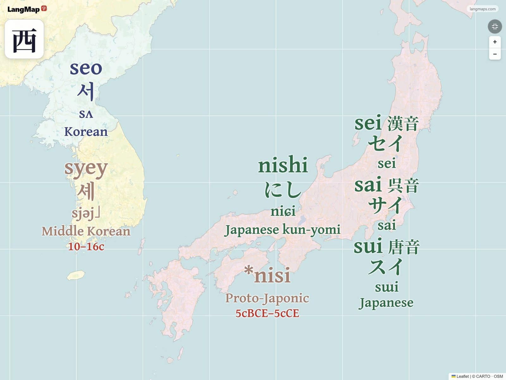

Why is 西瓜 pronounced suika?
- Japan has a very ordinary word with a surprisingly strange pronunciation.
- The word is 西瓜, "watermelon", read suika.
- Look closely at the first character, and you find three layers of borrowed Chinese.

Contents
One character, three readings
Japan's word for watermelon is:
すいか (suika)
Write it in kanji:
西瓜
literally, "western melon"
But wait.
西 usually appears as sei in words like:
西洋 (seiyō) = "the West"
西部 (seibu) = "western region"
西暦 (seireki) = "Western calendar"
So why isn't watermelon seika?
Why is it suika?
And then there is:
西遊記 (Saiyūki)
"Journey to the West"
Now 西 is sai.
So the same 西 has three different Sino-Japanese readings:
sai / sei / sui
Why?
Because Japanese did not borrow Chinese pronunciation only once.
It borrowed different layers of Chinese at different times.
1. 呉音 (Go-on): sai
One of the oldest major layers is 呉音 (Go-on).
For 西, that gives sai, as in:
西遊記 (Saiyūki)
"Journey to the West"
2. 漢音 (Kan-on): sei
Later came 漢音 (Kan-on), strongly influenced by the prestigious pronunciation learned from Tang China.
For 西, that gives sei, as in:
西洋 (seiyō) = "the West"
西部 (seibu) = "western region"
西暦 (seireki) = "Western calendar"
3. 唐音 (Tō-on): sui
Then there is the later layer traditionally called 唐音 (Tō-on).
For 西, that gives sui, as in:
西瓜 (suika)
"watermelon"
So one character preserves three different historical layers:
西遊記 sai: 呉音 (Go-on)
西洋 sei: 漢音 (Kan-on)
西瓜 sui: 唐音 (Tō-on)
This is why kanji readings can look so inconsistent.
They are often not random.
They are historical layers.
Japanese did not borrow "the Chinese pronunciation" of 西 once.
It borrowed Chinese pronunciation repeatedly, at different periods and through different channels.
And all three readings survived.
A small extra
Of course, these are not the only ways 西 can be read in Japanese.
The most famous other reading is the native Japanese:
西 (nishi) = "west"
There are also regional, personal-name and special readings.
But sai / sei / sui alone already show something remarkable:
one character can preserve several different periods of contact with Chinese.
One historical catch
The dates do not line up as neatly as you might expect.
西瓜 (suika) was already known in Japan by at least the 14th century.
西遊記 (Saiyūki), "Journey to the West," is a much later Ming-dynasty novel and became known in Japan afterward.
Yet 西瓜 uses the later sui, while 西遊記 uses the older sai.
That is because the reading does not depend only on when the thing arrived.
It also depends on how the word entered Japanese and which reading tradition was applied to it.
So a newer Chinese book could be read with an old established Japanese reading, while the name of a foreign food could preserve a newer Chinese pronunciation.
That is the real story behind:
西 = sai / sei / sui
One character.
Three readings.
Three layers of history.